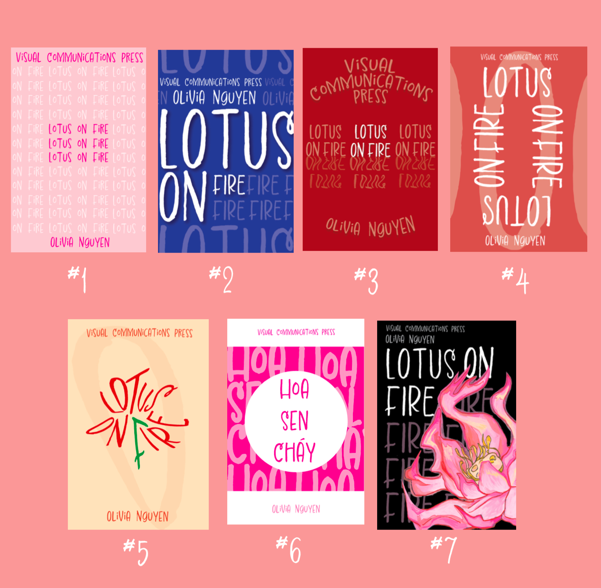
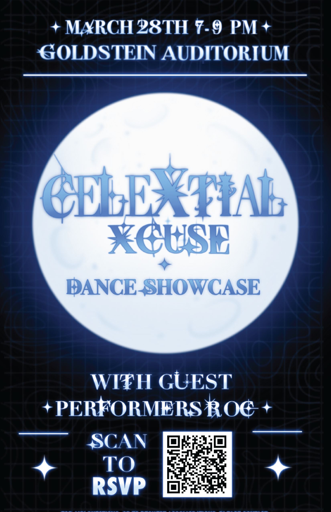
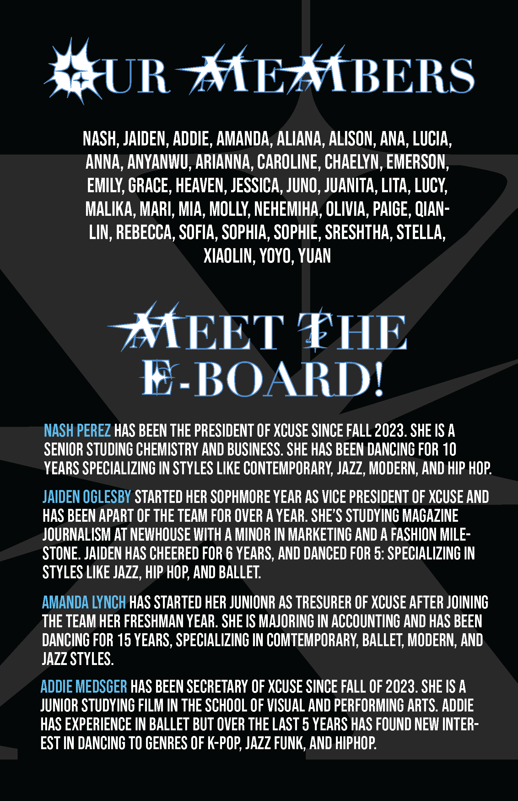
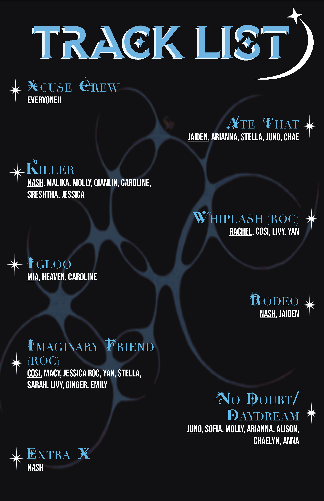
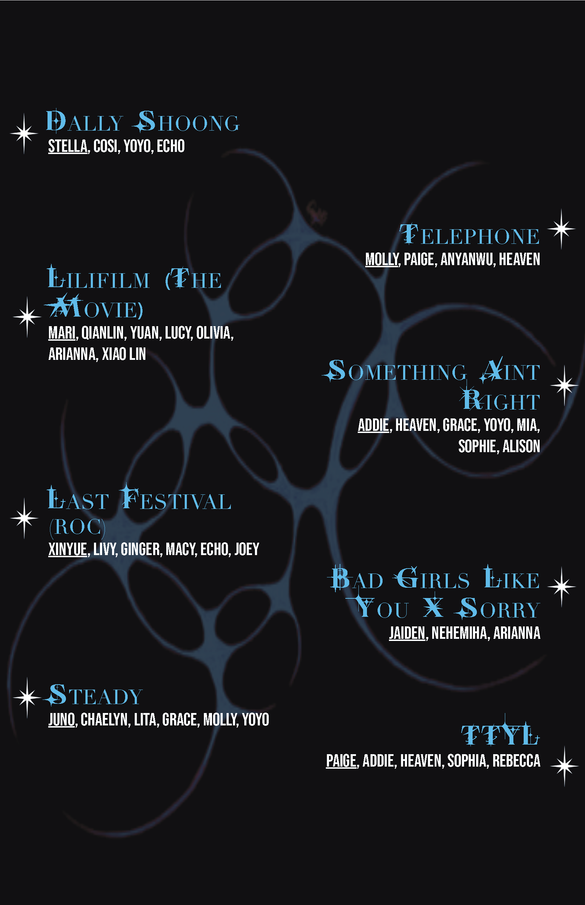
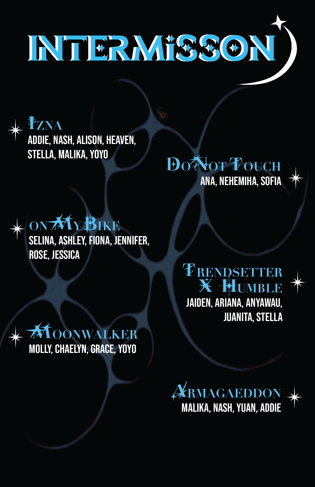
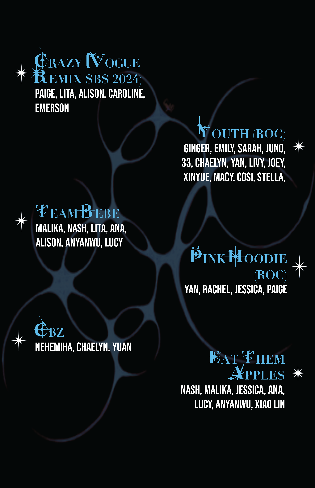
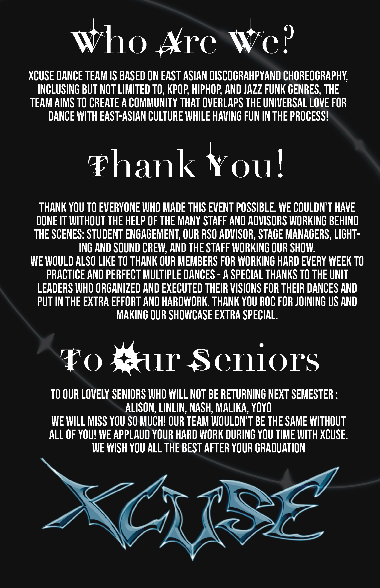
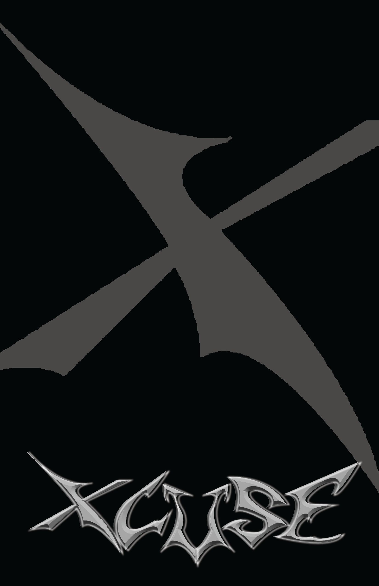

Here you'll find revelant images and explanations of my design/artwork.
For this design piece I was tasked with creating a poster for either a bus stop or billboard for a current, exisitng brand. I had to follow the brand guidelines in order to create a poster that the brand would "actually" use. I choose to create one for Duolingo because it's an app that I use and I love the fun illustrations and mascot that comes with it.
For this design piece I was tasked with creating a typeface for a client. I created a typeface for a professor at Syracuse University, Anthony Adornato. For this typeface I was inspired by his background as a report on TV and he had worked in NBC. I decided to make my typeface something that stood out, was confident, outspoken and had that sense of quirkiness and "star quality."

For this project I created mockup icons for a bakery. I wanted to create these icons for a print menu. They are used to categorize different sections but also to make a menu easier to navigate and more visually appeal. These icons also represent different things that customers could ask for on the menu. For example, the chef's hat represents a "chef's special" if a customer wants. The cake icon not only represents a single slice of cake a customer can order, but it also represents a signature or best-selling cake. It can be used to showcase limited-edition cake slices and to locate the dessert section on the menu.


For this project I created 7 book covers for a "personal memoir". Each cover had certain limits and restrictions that I had to work for. For example, for the first cover I could only change on varible, so I changed color and pushed the limits by repeating the title over and over again. I kept all the other variables the same, the words are the same size, the line spacing between each title is the same, and the point size stayed the same for all the text.









Here we have a program that I collaborated with a member on the XCUSE creative committee to creative for our dance showcase. Our theme was "Celestial" so we wanted to create something that had an outer space look.
This is a poster I created showing a creative way in how to use design to make the learning experience more fun and innovative. I used the packaging steps from a ramen packet and put in the smoke of the illustration of the ramen to make the poster stand out and fun to look at.